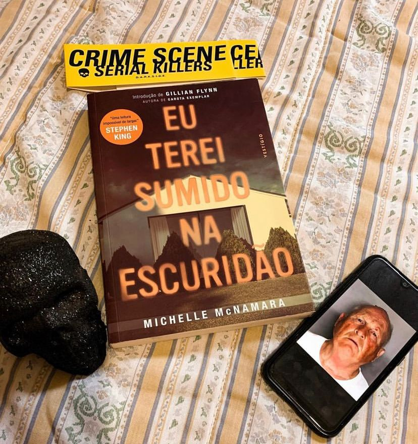

Eu terei sumido na escuridão
(Michelle McNamara - Vestígio)
⭐⭐⭐⭐
⚠️Gatilhos: Estupro, assassinato e violência psicológica.
Se você gosta de true crime, esse livro é pra você ! E a história por trás dele é mais interessante ainda. Michelle McNamara morreu antes de descobrir a verdadeira identidade do “Golden State Killer”; ou “Assassino do Estado Dourado”. O livro foi finalizado por seus editores e seu marido Patton Oswalt, um comediante.
Mas você deve estar se perguntando: Quem foi o Golden State Killer?
Por mais de dez anos; um criminoso sexual misterioso e brutal violentou cinquenta pessoas no norte da Califórnia antes de se transferir para o sul; onde cometeu dez assassinatos perversos. Em 1986; desapareceu; evitando sua captura por 30 anos.
Ao longo dessas três décadas; Michelle McNamara; uma jornalista investigativa que criou o popular website TrueCrimeDiary.com; se dedicou ao caso; determinada a encontrar o psicopata cruel que ela chamava de “Golden State Killer”.
Aqui você vai entender o modus Operandi do assassino, depoimentos e história de vítimas sobre as consequência dos ataques.
Em 2018, depois de três décadas de investigação e meses após a publicão do livro, Joseph James DeAngelo foi preso em Sacramento; Califórnia; finalmente identificado por meio de testes de DNA.
McNamara; que fazia uso de medicamentos para ansiedade e transtorno do pânico; e estava sobrecarregada com o caso, ela morreu de um mal súbito em 2016; aos 46 anos; e não pôde vivenciar seu triunfo.